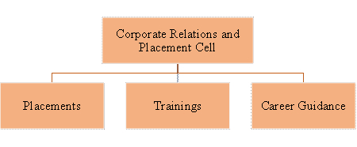
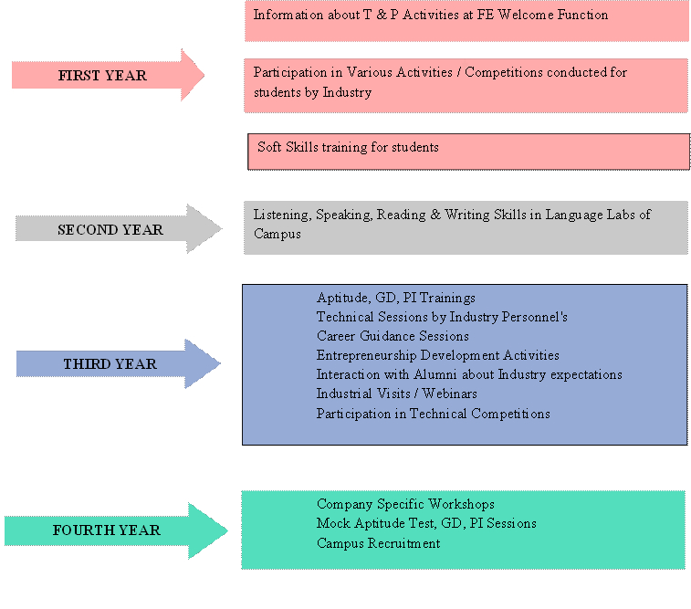

Institutional Distinctiveness:
The institute's Corporate Relations & Placement Cell (CRPC) is an integral feature.
In order to increase the employability of the students, the Cell works consistently
and continuously to give them multiple possibilities to take part in the campus
recruitment process. To ensure that the students are prepared for their careers
and uphold the company's standards, several training programs are consistently
implemented throughout the year. In addition to this the cell also works on
diverse areas of improvement for students such as enhancing their technical
abilities, personality development, communication and soft skills, resume building,
etc. Various training and student development activities are conducted right from
First Year of Engineering till they get placed in reputed organizations.

Salient features of CRPC are:
- Strong Alumni engagement
- Employability enhancement program in collaboration with industries and experts
- Thrust on Personality Development, Soft Skills and Communication Skills in English with help of Language Laboratories of campus
- Participation of students in Hackathon and competitions organized by industries
- Company specific trainings and mock drives
- Notable Placement Record
The three prominent verticals wherein CRPC contributes are:
- Placements
- Trainings
- Career Guidance
